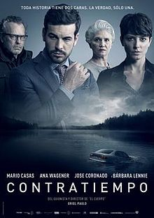

Um contratempo

Sinopse
Tudo está indo muito bem para Adrian Doria (Mario Casas). Seu negócio é um sucesso e lhe trouxe riqueza, sua bela esposa teve a criança perfeita, e sua amante está bem com o caso dos dois escondido. Tudo está ótimo até que Doria desperta num quarto de hotel, depois de ser atingido na cabeça, e encontra sua amante morta no banheiro, coberta com um monte de notas em euros. Pior, o quarto é trancado por dentro e não tem nenhuma maneira de entrar ou sair. Com tudo o que construiu desmoronando aos seus pés, Doria recorre a melhor advogada de defesa da Espanha, Virginia Goodman (Ana Wagener), e eles tentam descobrir o que realmente aconteceu na noite anterior.
Elenco Principal
- Mario Casas - Adrian Doria
- Bárbara Lennie - Laura
- Virginia Goodman - Ana Wagener
Opinião
É um filme cheio de suspense, tenso do inicio ao fim. Uma trama complexa e que vai te deixar intrigado.
Um filme espanhol, muito bom!
Onde assistir
O filme está disponivel na plataforma abaixo:
|
|